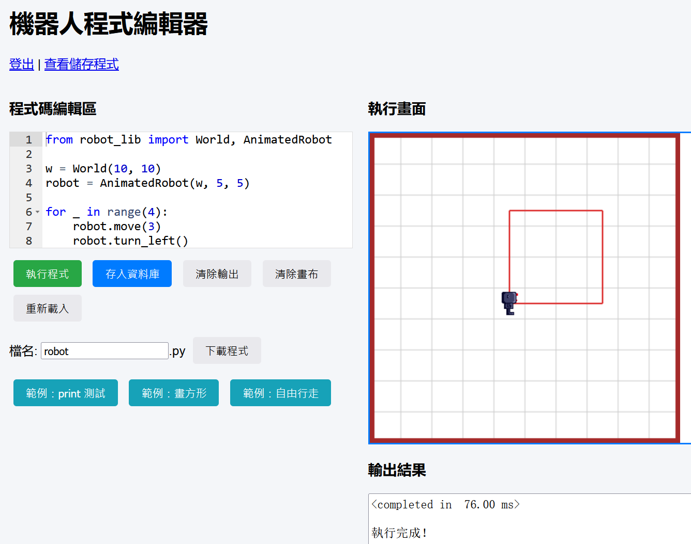

w10 <<
Previous Next >> 9499
Projects
Flask + Brython (robot_lib.py) + Peewee + SQLite (MySQL, PostgreSQL)
brython_proj_stage1.7z
brython_proj.7z
db_browser.7z.001
db_browser.7z.002
db_browser.7z.003
取得 Ubuntu 操作系統上的帳號: https://s5.eng.nfu.edu.tw:9500
線上 Brython 程式環境: https://s5.eng.nfu.edu.tw:9499/

期末分組專案示範:
從 https://s5.eng.nfu.edu.tw:9499/brython_test?load=432 簡單的瀏覽器前端程式，延伸至 https://github.com/mdecycu/cp_final_ex
w14-w18: Python (Flask)，Brython，Peewee (ORM)，SQLite
Brython 程式環境:
https://s5.eng.nfu.edu.tw:9499/ (部署到 Linux)
https://github.com/mdecycu/brython_proj (原始碼)
英雄榜:
https://s5.eng.nfu.edu.tw:9498/ (部署到 Linux)
https://github.com/mdecycu/cp_final_ex (原始碼)
如何修改:
憤怒鳥與三隻小豬 (用投石器擊潰小豬房舍得分)
angrybird_stage1.7z
angrybird_stage2.7z
https://s5.eng.nfu.edu.tw:9497/ (部署到 Linux)
https://github.com/mdecycu/angrybird (原始碼)
投籃比賽 (投球機構分別投出隨機重量，不同距離的籃框得分)
怒鳥 x 三隻小豬
除了「擊潰房舍」之外，可以加入：
1. 破壞效率得分（工程能量概念）
玩家使用的拉距（向量長度）越短 → 分數係數越高
使用最少的彈射能量達成破壞 → 類似「最節能工程師獎」
2. 不同材料的建築（教育點：剛性 vs 韌性）
房舍材料可隨機或逐關：
木材（易斷）
磚塊（堅硬但脆）
鋼材（高強度但難破壞）
泡綿（吸能而不倒）
→ 玩家要學會調整發射角度與力量，才能找出 最佳撞擊點。
3. 加入風（向量合力）
像高級關卡：
加風向（顯示箭頭）
讓發射軌跡被偏移
玩家必須考慮：
合力 = 發射向量 + 風力向量
4. 建築結構弱點（破壞力學示意）
目標房舍可以加入「弱點」：
連接點
支撐柱
重心
若玩家擊中弱點 →額外得分
讓玩家學到結構力學的基本原理。
5. 多種彈射球（材料力學教育）
重球（高動能）
軟球（不易破壞）
彈力球（反彈後可二段攻擊）
粗糙球（撞擊後不滑動）
B. 投籃比賽（加入工程機構 + 隨機重量系統）
你提出的「投球機構投出不同重量球、不同距離有不同分數」很棒，還可以加入：
1. 球重量隨機 → 玩家需調整角度+力道（向量概念）
例如：
輕球 → 飛得遠
重球 → 掉得快
可以在畫面顯示：
球重量圖示
建議「速度 vs 角度」提示（教育內容）
2. 風阻 / 空氣阻力（速度衰減）
讓玩家體驗阻力方程式的效果，但以簡化版呈現：
vx *= 0.98
vy *= 0.98
3. 多籃框、不同角度與高度（工程射擊設計）
偏左、偏右
高籃框（需要更大角度）
移動籃框（反應力學+預判）
4. 多種投球機構（遊戲可玩性 up）
玩家可選：
彈射器
彈弓
壓縮彈簧槍（力學公式：E=1/2 kx²）
空壓投球器（可加入空壓示意）
不同機構對應不同的「力量來源」。
5. 連續 combo（操作技巧提升）
如果玩家：
連續命中 2 次 → 力量誤差加倍
連續命中 3 次 → 投射準心變大
增加競技性。
C. 其他可行的類憤怒鳥 + 工程力學遊戲設計
以下是你可以加入到平台中的新遊戲模式（同樣用滑鼠操作、輕量向量力學）：
1. 工程投射擂台（向量角度 + 能量優化）
玩家需要讓球落在指定「工程目標區」內：
Zone A：高角度反射
Zone B：低速度精準
Zone C：滑行距離最長
教育點：
投射角影響水平距離
滑動與摩擦力概念
動能 → 滑行距離
2. 拆除工程師（精準點破壞）
像破壞磚塊遊戲：
結構內有多個節點（Nodes）
玩家選擇用多少「力」攻擊哪個節點
物理反應可能是：
破壞後塔倒塌
重心偏移後自己崩壞（很爽 XD）
教育點：
結構剛度
最佳攻擊點
3. 拋射運輸系統（控制角度搬運物體）
玩家射出小車/小球，要把它送到指定平台：
過低會掉下去
過高會撞到障礙
太快會彈飛
有點像「工程跨越」的概念。
4. 風場拋物線（合力可視化）
畫面中有風力場（用箭頭表示）
玩家射出的球會被風帶走。
可加入：
升力版本（像紙飛機飛更遠）
下沉區（重力場）
教育點：
合力向量 F = ΣFi
5. 彈射賽車（速度向量 + 碰撞）
玩家用彈弓把車射出去，
看誰滑得最遠。
加入：
地面摩擦分區
沙地、冰塊、水坑
彈跳坡道（動能 → 位能 → 動能）
D. 其他功能：
排行榜
回放（儲存向量→重播）
限時賽（最短時間通過關卡）
最少能量（拉最短的距離破壞）
每日挑戰（隨機風 + 隨機重量）
w10 <<
Previous Next >> 9499